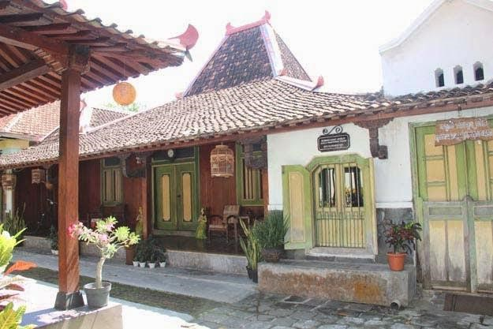

Joglo adalah rumah adat masyarakat Jawa. Bagian-bagian joglo yaitu :
1. pendapa.
2. pringgitan.
3. dalem.
4. sentong.
5. gandok tengen.
6. gandok kiwo.
Bagian pendapa adalah bagian paling depan Joglo yang mempunyai ruangan luas tanpa sekat-sekat, biasanya digunakan sebagai tempat pertemuan untuk acara besar bagi penghuninya. Seperti acara pagelaran wayang kulit, tari, gamelan dan yang lain. Pada waktu ada acara syukuran biasanya sebagai tempat tamu besar. Pendopo biasanya terdapat soko guru, soko pengerek, dan tumpang sari.
Bagian Pringgitan adalah bagian penghubung antara pendopo dan rumah dalem. Bagian ini dengan pendopo biasanya di batasi dengan seketsel dan dengan dalem dibatasi dengan gebyok. Fungsi bagian pringgitan biasanya sebagai ruang tamu.
Bagian Dalem adalah bagian tempat bersantai keluarga. Bagian ruangan yang bersifat lebih privasi.